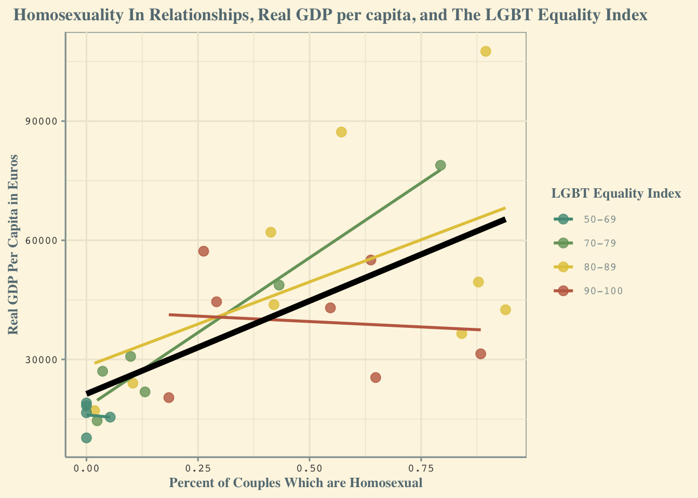

── Attaching core tidyverse packages ──────────────────────── tidyverse 2.0.0 ──
✔ dplyr 1.1.4 ✔ stringr 1.5.1
✔ lubridate 1.9.4 ✔ tibble 3.2.1
✔ purrr 1.0.2 ✔ tidyr 1.3.1
✔ readr 2.1.5
── Conflicts ────────────────────────────────────────── tidyverse_conflicts() ──
✖ dplyr::filter() masks stats::filter()
✖ dplyr::lag() masks stats::lag()
ℹ Use the conflicted package (<http://conflicted.r-lib.org/>) to force all conflicts to become errors3 Trivariate Viz
3.1 Research question:
Do rates of gay marriage increase in European countries as GDP per capita increases, or vice versa, and is the correlation different depending on a countries’ LGBT Equality Index
3.2 Step 1: Load necessary packages
3.3 Step 2: Import and clean / wrangle / join data
Data about marriages in European countries:
Rows: 232 Columns: 12
── Column specification ────────────────────────────────────────────────────────
Delimiter: ","
chr (10): DATAFLOW, LAST UPDATE, freq, marsta, age, sex, unit, geo, OBS_FLAG...
dbl (2): TIME_PERIOD, OBS_VALUE
ℹ Use `spec()` to retrieve the full column specification for this data.
ℹ Specify the column types or set `show_col_types = FALSE` to quiet this message.Code
euro_households <- messy_euro_households |>
filter(TIME_PERIOD == 2021) |> # I am setting the data to come from 2021 so that it matches my data on the GDP per capita of European countries
select(geo, OBS_VALUE, marsta) |>
filter(marsta %in% c("Persons in an same-sex married couple or registered partnership", "Married persons or in registered partnership")) |> # from this dataset, we want to use the values for couples who are homosexual and the total couples
mutate(marsta = fct_recode(marsta,
"homo_couples" = "Persons in an same-sex married couple or registered partnership",
"all_couples" = "Married persons or in registered partnership")) |> # I am renaming the code to factors because the current titles cannot be used in r code to do equations
pivot_wider(names_from = marsta, values_from = OBS_VALUE) |> # I am making the information spread onto one row so I can then use the values as part of the same row to calculate the percent of the couples who are homosexual
mutate(pct_homo_marriages = (homo_couples / all_couples) * 100) # I am making a new variable that represents the percent of each nation's couples which are homosexual, answering a necessary part of my research questionData about the GDP of European countries:
Rows: 936 Columns: 10
── Column specification ────────────────────────────────────────────────────────
Delimiter: ","
chr (7): DATAFLOW, LAST UPDATE, freq, unit, na_item, geo, OBS_FLAG
dbl (2): TIME_PERIOD, OBS_VALUE
lgl (1): CONF_STATUS
ℹ Use `spec()` to retrieve the full column specification for this data.
ℹ Specify the column types or set `show_col_types = FALSE` to quiet this message.Code
euro_gdp_capita <- messy_euro_gdp_capita |>
filter(TIME_PERIOD == 2021) |>
select(geo, OBS_VALUE)
euro_gdp_marriages <- euro_households |>
left_join(euro_gdp_capita, join_by(geo == geo)) # I am using left join here to combine the datasets on GDP per capita and the rates of couples that are homosexual in European countriesData on the LGBT Equality Index of countries around the world:
Rows: 197 Columns: 6
── Column specification ────────────────────────────────────────────────────────
Delimiter: ","
chr (2): Rank, Region ID
dbl (4): Name, EI, EI Legal, EI PO
ℹ Use `spec()` to retrieve the full column specification for this data.
ℹ Specify the column types or set `show_col_types = FALSE` to quiet this message.Code
gay_rights <- messy_gay_rights |>
select(`Region ID`, EI) |>
mutate(EI = cut(EI,
breaks = c(50, 70, 80, 90, Inf),
labels = c("50-69", "70-79", "80-89", "90-100"),
include.lowest = TRUE)) # I am breaking the equality index of each country into quantitative classes so that it is easier for the viewer to read the plot later
my_colors <- c(
"50-69" = "#529985",
"70-79" = "#78A269",
"80-89" = "#E3C849",
"90-100" = "#C26B51") # here I am assigning colors for each of the classes
euro_gdp_marriages_rights <- euro_gdp_marriages |>
left_join(gay_rights, join_by(geo == 'Region ID'))3.4 Step 3: Visualize
Code
ggplot(euro_gdp_marriages_rights, aes(x = pct_homo_marriages, y = OBS_VALUE, color = EI)) +
geom_point(size = 3,
alpha = 0.8) +
scale_color_manual(name = "LGBT Equality Index",
values = my_colors) + # here I am using my previously assigned colors for the factors
theme_solarized() +
geom_smooth(method = "lm",
se = FALSE) + # I am getting rid of the confidence interval because it obscures much of the graph
labs(x = "Percent of Couples Which are Homosexual",
y = "Real GDP Per Capita in Euros",
title = "Percent of Couples Which are Homosexual, Real GDP per capita, and the LGBT Equality Index of European Countries") +
geom_smooth(aes(x = pct_homo_marriages, y = OBS_VALUE),
method = "lm",
line_type = "dashed",
se = FALSE,
inherit.aes = FALSE,
color = "black",
linewidth = 2) # I increase the linewidth to make it clear that this line in the most important, different from the others as a representation of the overall trendWarning in geom_smooth(aes(x = pct_homo_marriages, y = OBS_VALUE), method =
"lm", : Ignoring unknown parameters: `line_type``geom_smooth()` using formula = 'y ~ x'Warning: Removed 2 rows containing non-finite outside the scale range
(`stat_smooth()`).`geom_smooth()` using formula = 'y ~ x'Warning: Removed 2 rows containing non-finite outside the scale range
(`stat_smooth()`).Warning: Removed 2 rows containing missing values or values outside the scale range
(`geom_point()`).
3.5 Conclusion:
While this plot is not enough to make definitive conclusions, it does appear to show slight correlations. Interestingly, there are only two situations where the real GDP per capita decreases as the percent of couples that are homosexual increases. Firstly, when the LGBT inequality index is between 90-100, and also when it is between 50-69. It is quite ironic, and possibly suggests that the LGBT equality index isn’t even having an actual effect. The decrease observed is relatively small compared to the large increase that can be observed between from countries in the 70-79 range and the 80-89 range. The thick black line represents the overall correlation between real GDP per capita and the percent of couples which are homosexual, regardless of the LGBT equality index, showing a large increase. Whether one causes the other is difficult to say. Perhaps marriages causes the GDP to increase, and as homosexual people become able to marry, their marriages increase the GDP per capita. Or perhaps increasing GDP per capita spurs increased homosexual marriages as a percent of the couples in a country’s population. There are a lot of explanations that should be explored, and whether or not there is a strong correlation between LGBT equality index scores, the percent of couples which are homosexual, and the Real GDP per capita should be investigated.
3.6 references
https://ec.europa.eu/eurostat/databrowser/view/cens_21m/default/table?lang=en&category=cens.cens_21.cens_21fh (accessed: April 13th, 2025) https://ec.europa.eu/eurostat/databrowser/view/sdg_08_10/default/table?lang=en (accessed: April 13th, 2025) https://www.equaldex.com/equality-index-api (accessed: April 13th, 2025)